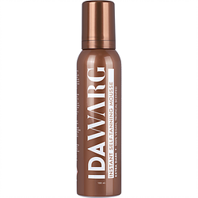

Alla produkter
Hitta och jämför bäst pris hos kända leverantörer
Hitta och jämför brun utan sol hos kända varumärken till bäst pris

Veckans favorit
Lätt att använda, luktar helt fantastiskt och har en superbra effekt. Tack Ida Warg för att du har tagit fram Instant Self Tanning Mousse Extra Dark.
Fa bäst pris© 2020 BRUN UTAN SOL SVERIGE | COOKIES